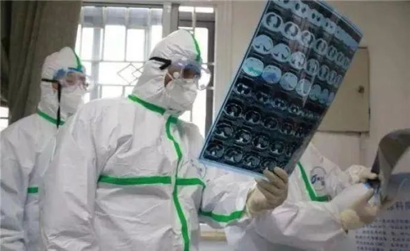

没时间悲伤，他们需要帮助
原文链接 备份链接 司机停下车来思忖着说，怎么给导到这里来了？ 那是一条土路，树在旁边矗立着。春天还没到来，它的叶子还没长出来。 “前方800米左转，500米后再左转”，导航里的声音软糯着。 金银潭医院是此次行程的目的地。这是武汉市最大的 …
澎湃新闻记者 李思文
CT!……CT!……急需CT设备！

2月初，国家卫健委发布《新型冠状病毒感染的肺炎的诊疗方案（试行第五版）》，CT影像结果被纳入湖北省临床诊断标准中，“疑似病例具有肺炎影像学特征者”，即为临床诊断病例。该方案一经发布，全国各省市医院CT扫描工作量激增，但伴随而来的，部分医院CT设备不足、缺少CT扫描技师、放射室易交叉感染等问题也亟待解决。
“我们放射科每天都是轮班倒，扫描完患者再看片子，平均工作时长都要10多个小时。”陈楠是安徽一新冠肺炎定点收治医院的放射科技师，由于新订购的CT设备尚未到位，新冠肺炎疑似及确诊患者仍需要前往原扫描室进行扫描，每次扫描后陈楠都需要进行终末消毒，工作量急剧增大。
与此同时，医疗企业CT设备订单量激增，许多企业春节期间仍继续生产，工人24小时轮班生产，目前仍是供不应求。在加速生产之余，部分企业也第一时间启动研发箱体式CT、远程诊断、人工智能辅助诊断等设备和技术助力抗疫。
CT扫描需求增大，企业设备订单激增
2月14日情人节，陈楠在医院持续工作了将近12个小时，为了避免穿脱防护服，晚饭也没来得及吃，直到晚上10点多回家。随着新冠肺炎疑似病例的增加，陈楠等放射科医生的工作量也在与日俱增，从1月下旬开始，陈楠高强度的工作量已经持续超过20天。
“我们放射科属于辅助科室，很多人觉得我们不是抗疫一线，但实际上我们的危险性特别高，是要和患者直接接触。”陈楠说，自己所在的医院已经设置了发热门诊，但由于新订购的CT设备尚未到位，新冠肺炎收治病人仍需由护士带领前往放射科进行CT扫描。
每次在工作前，陈楠都需要穿上三层防护服、口罩、护目镜。在扫描前，他要先进入扫描室进行病人摆位等操作，有些年纪大的病患，还需要动手协助病人进行摆位，“和病人的接触是无法避免的。”而在每次扫描后，为了避免交叉感染，陈楠要对整个扫描室进行终末消毒，包括空气消毒、设备消毒，“我们科室几个人连轴转，除了吃饭睡觉，就是扫描、看片子。”陈楠说，时常会觉得身体无法负荷。
据他了解，目前安徽省多数医院都面临着和他们一样的情况，新建了发热门诊，却缺乏CT设备、扫描技师轮班倒，“有的医院就是开通了新冠肺炎病人专门通道，和普通病人分开，但还是会有交叉传染的风险，有的医院像我们一样在购买新设备，但工厂生产不过来。”
对此，东软医疗系统股份有限公司CEO武少杰告诉澎湃新闻，以往春节期间都是医疗设备销售的淡季，但今年由于疫情原因，各个医疗企业都接到了大量订单，确实存在供不应求的情况。他介绍称，目前东软医疗已经向全国各地医院发货近百台CT设备，但仍有一百多个订单等待生产，其中大多数设备是用于各大医院的发热门诊。
“我们订单中很多都是三甲医院、传染病院，这些医院原本都配备了足够的CT放射室，但这次疫情爆发量大、患者也比较集中，很多医院都建立了专门的病区或发热门诊，原来配备的CT不能移动，也不能让普通病人和新冠肺炎疑似患者共同使用，所以都急需新的CT设备。”武少杰说，由于订单紧急，公司已经成立应急指挥中心，尽快缩短供货时间。
宁波的康达洲际医疗器械有限公司也收到了大量CT设备订单，“我们从小年夜就开始组织生产，已经发往武汉地区48台设备，发往全国其他地区60多台，但还有很多订单在抓紧生产。”该公司总经理郭咏梅说，为了加快生产，公司已经多增加一条生产线，并实施两班倒。
医企紧急研发新设备，“黑科技”助攻抗疫
在快速生产之余，部分医疗设备企业也在启动研发应对当前疫情的CT设备和辅助技术。
据上海联影医疗科技有限公司CT事业部副总裁胡玮介绍，在疫情发生后，公司在完成大量订单的同时，也第一时间启动了“方舱CT应急放射科”研发。“这是一台具备全智能工作流的天眼CT设备外加一种‘箱体式’设计的CT扫描间，采用类似集装箱的快速拆装设计，到了疫区经过短暂的安装过程就可以立即使用。”
胡玮说，目前“方舱CT应急放射科”主要是针对方舱医院，“因为很多方舱医院都建立在临时的室外场地，没有现成的房间能够满足CT放射室的要求，这套CT放射科解决方案就能很好地解决这个问题。”他告诉澎湃新闻，该项目经过研发后，2月4日投入生产，第一套方舱CT已经捐赠给武汉国展中心的方舱医院，2月16日正式投入使用。此外，联影医疗捐赠的另外9套“方舱CT应急放射科”也已经发往武汉，正在逐步搭建。
东软医疗系统股份有限公司也同时启动研发了“箱体式CT”，武少杰告诉澎湃新闻，该产品被称为“雷神CT”，设计该产品的初衷就是希望能够实现快速投入使用，支援疫区，“在这个与疫情比拼速度的关键时期，这个产品能实现无需安装、7日即可交付使用，大大缩短了生产和安装的时间。”目前，东软医疗研发的“雷神CT”已经正式交付“前线”。
除了研发“箱体式CT”，隔离操作、远程诊断、人工智能辅助诊断也成为了研发的重点技术。胡玮说，目前联影的CT设备，包括“方舱CT应急放射科”，均已搭载了一套“天眼技术”，“以往进行CT扫描都需要医生进入扫描间进行患者摆位等操作，但依靠这个技术，可以通过智能摄像头和算法，让技师在操作室就能引导患者进行精准摆位和定位，能最大限度减少医生和患者的不必要接触，并确保扫描质量。”
人工智能辅助诊断也是医疗设备企业的研发重点，胡玮说，联影医疗子公司已经启动了针对新冠病毒的AI技术开发，“就是可以通过人工智能来进行辅助诊断，比如利用高敏感性的检测算法，能够检测到微小、不明显的疑似病灶，助力医生对疑似病例进行有效筛查、甄别。不仅如此，针对确诊病患，人工智能还能够进行分级评估，获得‘新冠肺炎严重指数’，对病人分诊提供帮助，同时给出科学有效的治疗方案，供医生诊断参考。”胡玮介绍称，目前人工智能技术已经研发出新冠肺炎辅助诊断软件，在武汉火神山医院已经正式上线。
东软医疗在研发人工智能辅助诊断技术的同时，也在进行“5G+云技术”的探索。武少杰说，“5G+云技术”是一种远程诊断技术，目前部分医院面临医护资源不足的情况，使用远程诊断技术，就可以将医疗资源不足医院的CT扫描结果，通过实时传输数据，实现远程诊断，“这样外省市的放射科医生不用前往一线，就可以协助进行CT诊断，大大减轻一线医护人员的压力和工作量。”
武少杰说，在这次疫情面前，医疗企业的研发人员都在加班加点进行新技术研发工作，“这次抗疫我感觉咱们国内的医疗设备企业确实成长很快，无论是响应速度、生产供货能力还是创新性，提升都非常快，大家在齐心协力地提供帮助，希望能共度难关。”
戳这里进入
“全国新型冠状病毒感染病例实时地图”↓↓↓

本期编辑 周玉华
推荐阅读


原文链接 备份链接 司机停下车来思忖着说，怎么给导到这里来了？ 那是一条土路，树在旁边矗立着。春天还没到来，它的叶子还没长出来。 “前方800米左转，500米后再左转”，导航里的声音软糯着。 金银潭医院是此次行程的目的地。这是武汉市最大的 …
原文链接 备份链接 *************▲*************2月5日，武汉大学中南医院重症医学科主任彭志勇（左）走进隔离病房准备救治患者，一名医生在他的隔离服上写下名字。 （ 新华社/图） 全文共2830字，阅读大约需要7 …
原文链接 备份链接 像我这样一个心脏移植患者都能康复，相信能给更多人信心——这个病毒并不可怕。 口述 | 秦 天（化名） 整理 | 沈 林 2月11日，我从武汉金银潭出院了。对于一个心脏移植患者来说，这很不容易，就算是感染了普通的感冒， …
原文链接 备份链接 澎湃新闻记者 赵思维 发自武汉 实习生 沈佳昕 最近的20多天，何伟（化名）的心情犹如过山车般起落。 从确诊住不进医院的焦虑，到住进方舱医院治愈后的激动，“做一个健康人”，和家人平平安安过日子，成为他这段时间以来想得 …
原文链接 备份链接 方舱医院患者出院还是比较快的，这样周转起来，就可以接收大量的病人，可以做到“应收尽收”。 文 | 黄 祺 13天前，武汉新冠肺炎疫情仿如“暗夜”——社区还有大量感染者未能得到诊断，他们如果得不到及时的治疗，病情很可能 …